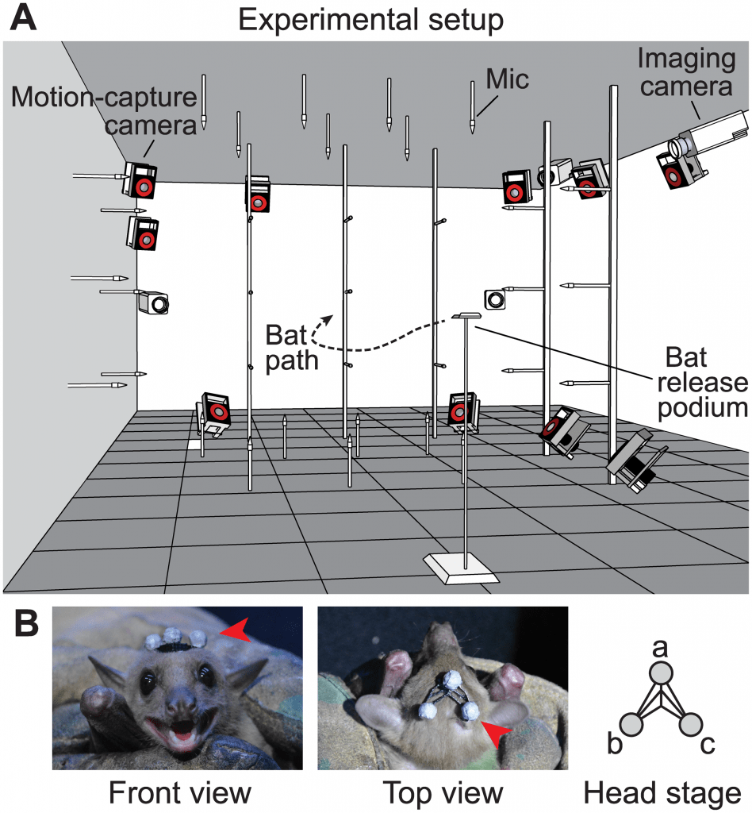
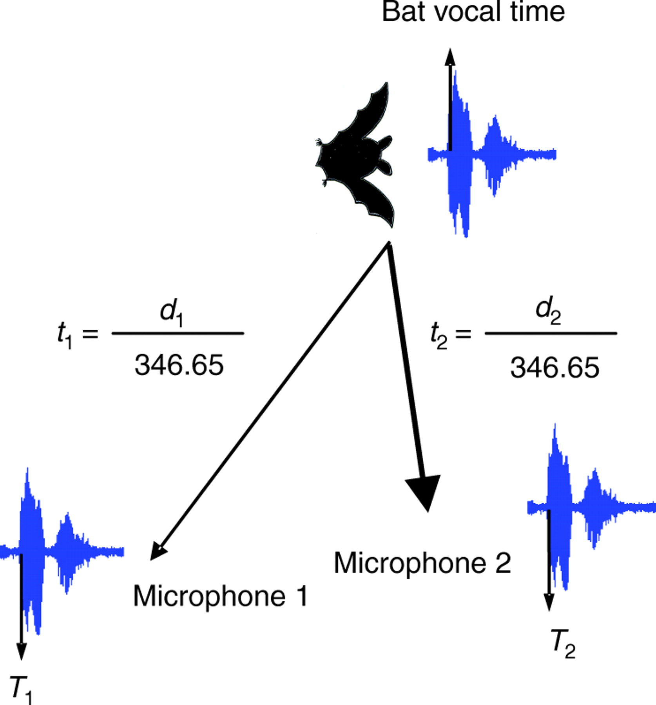

Fruit Bats: Inspiration for Robots, Driverless Cars, and Drones

Using Research About Echolocation to Create Technological Advances.
Lee, a researcher at the University of Washington’s Applied Physics Laboratory, measured echolocation signals from Egyptian Fruit Bats.
He realized that the beam of different frequencies of sound waves emitted by the bats formed a bulls-eye and didn’t align at the center like an ordinary sound source would.
The Fruit Bats' elongated shapes of the bats' moths created varying distances between the sound sources and gaps between its teeth, resulting in
different frequencies pointing in different directions, just like frequency-scanning sonar.
This could form the backbone of driverless cars and self-driven drones. This same echolocation technology could even
be used to create self-navigating robots.
Echolocation: Helping Blind People See With Sound

Adaptive echolocation behavior in bats for the analysis of auditory scenes
Seth Horowitz, chief neuroscientist and founder of NeuroPOP, discovered that
discovered that big brown bats echolated due to gap junctions
in certain neurons that processed sound.
In the nervous system, gap junctions are often precursors
to chemical synapses, which work together to transfer information
throughout the body.
Like bats, many blind students invent their own echolocation strategies,
such as snapping their fingers, clicking their tongues, or whacking their canes.
However, echolocation doesn't come easily to every blind person.
Using a biometric assistive device based on the echolocation of bats,
it may be possible to help blind people see using sound in a world that
isn't perfect for their limited echolocation stratgies.